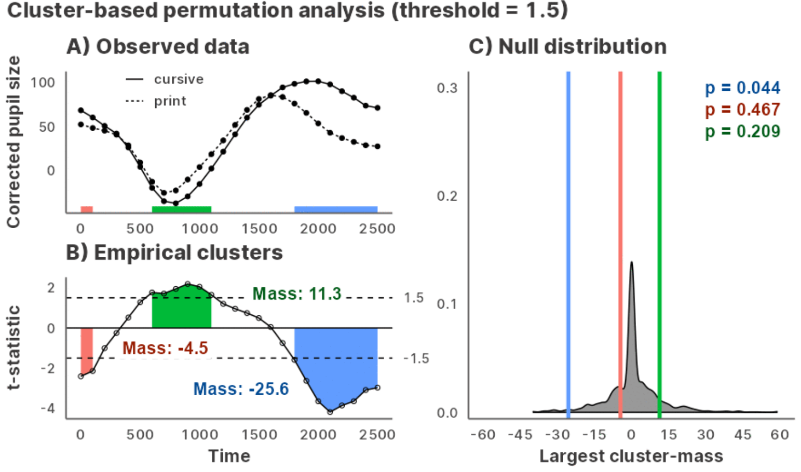
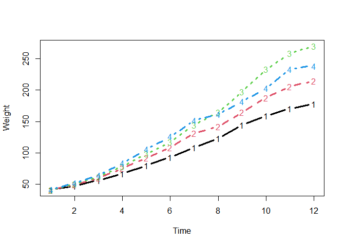
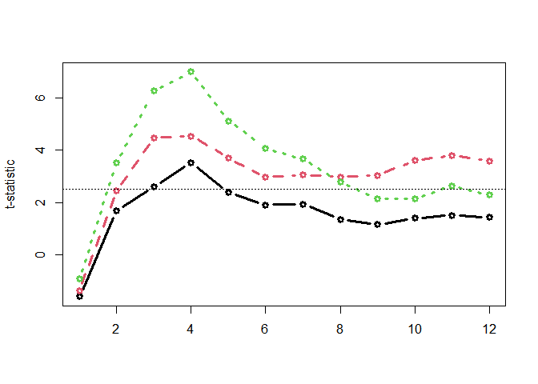

Julia GLM.jl and MixedModels.jl implementation of bootstrapped cluster-based permutation analysis (CPA) for time series data, powered by JuliaConnectoR.

Installation and usage
You can install the development version of jlmerclusterperm from GitHub with:
# install.packages("remotes")
remotes::install_github("yjunechoe/jlmerclusterperm")Using jlmerclusterperm requires a prior installation of Julia, which can be downloaded from either the official website or using the command line utility juliaup. Julia version >=1.8 is required and 1.9 is preferred for its substantial speed improvements.
Before using functions from jlmerclusterperm, an initial setup step is required via calling jlmerclusterperm_setup(). The very first call on a system will start Julia and install necessary dependencies (this only happens once and takes 15-30 minutes).
Subsequent calls to jlmerclusterperm_setup() incur a small overhead of around 30 seconds, plus slight delays for first-time function calls due to Julia’s just-in-time compilation. You pay up front for start-up and warm-up costs and get blazingly-fast functions from the package.
# Both lines must be run
library(jlmerclusterperm)
system.time(jlmerclusterperm_setup(verbose = FALSE))
#> user system elapsed
#> 0.03 0.05 26.26See the Articles page on the package website for in-depth tutorials and case study vignettes.
Quick tour of package functionalities
Complete CPA with clusterpermute()
A time series data:
chickweights <- ChickWeight
chickweights$Time <- as.integer(factor(chickweights$Time))
matplot(
tapply(chickweights$weight, chickweights[c("Time", "Diet")], mean),
type = "b", lwd = 3, ylab = "Weight", xlab = "Time"
)
Preparing a specification object:
chickweights_spec <- make_jlmer_spec(
formula = weight ~ 1 + Diet,
data = chickweights,
subject = "Chick", time = "Time"
)
chickweights_spec
#> ── jlmer specification ───────────────────────────────────────── <jlmer_spec> ──
#> Formula: weight ~ 1 + Diet2 + Diet3 + Diet4
#> Predictors:
#> Diet: Diet2, Diet3, Diet4
#> Groupings:
#> Subject: Chick
#> Trial:
#> Time: Time
#> Data:
#> # A tibble: 578 × 6
#> weight Diet2 Diet3 Diet4 Chick Time
#> <dbl> <dbl> <dbl> <dbl> <ord> <int>
#> 1 42 0 0 0 1 1
#> 2 51 0 0 0 1 2
#> 3 59 0 0 0 1 3
#> # ℹ 575 more rows
#> ────────────────────────────────────────────────────────────────────────────────Cluster-based permutation test:
set_rng_state(123L)
clusterpermute(
chickweights_spec,
threshold = 2.5,
nsim = 100,
progress = FALSE
)
#> $null_cluster_dists
#> ── Null cluster-mass distribution (t > 2.5) ──────────── <null_cluster_dists> ──
#> Diet2 (n = 100)
#> Mean (SD): -0.039 (1.89)
#> Coverage intervals: 95% [-2.862, 0.000]
#> Diet3 (n = 100)
#> Mean (SD): -0.129 (2.02)
#> Coverage intervals: 95% [0.000, 0.000]
#> Diet4 (n = 100)
#> Mean (SD): 0.296 (3.21)
#> Coverage intervals: 95% [0.000, 5.797]
#> ────────────────────────────────────────────────────────────────────────────────
#>
#> $empirical_clusters
#> ── Empirical clusters (t > 2.5) ──────────────────────── <empirical_clusters> ──
#> Diet2
#> [3, 4]: 6.121 (p=0.0495)
#> Diet3
#> [3, 12]: 35.769 (p=0.0099)
#> Diet4
#> [2, 8]: 32.442 (p=0.0099)
#> ────────────────────────────────────────────────────────────────────────────────With random effects:
chickweights_re_spec <- make_jlmer_spec(
formula = weight ~ 1 + Diet + (1 | Chick),
data = chickweights,
subject = "Chick", time = "Time"
)
set_rng_state(123L)
clusterpermute(
chickweights_re_spec,
threshold = 2.5,
nsim = 100,
progress = FALSE
)$empirical_clusters
#> ── Empirical clusters (t > 2.5) ──────────────────────── <empirical_clusters> ──
#> Diet2
#> [3, 4]: 6.387 (p=0.0594)
#> Diet3
#> [2, 12]: 39.919 (p=0.0099)
#> Diet4
#> [2, 8]: 33.853 (p=0.0099)
#> ────────────────────────────────────────────────────────────────────────────────Piecemeal approach to CPA
Computing time-wise statistics of the observed data:
empirical_statistics <- compute_timewise_statistics(chickweights_spec)
tidy(empirical_statistics)
#> # A tibble: 36 × 3
#> predictor time statistic
#> <chr> <dbl> <dbl>
#> 1 Diet2 1 -1.60
#> 2 Diet3 1 -1.37
#> 3 Diet4 1 -0.916
#> 4 Diet2 2 1.67
#> 5 Diet3 2 2.45
#> 6 Diet4 2 3.53
#> 7 Diet2 3 2.60
#> 8 Diet3 3 4.48
#> 9 Diet4 3 6.27
#> 10 Diet2 4 3.52
#> # ℹ 26 more rows
matplot(t(empirical_statistics), type = "b", pch = 1, lwd = 3, ylab = "t-statistic")
abline(h = 2.5, lty = 3)
Identifying empirical clusters:
empirical_clusters <- extract_empirical_clusters(empirical_statistics, threshold = 2.5)
empirical_clusters
#> ── Empirical clusters (t > 2.5) ──────────────────────── <empirical_clusters> ──
#> Diet2
#> [3, 4]: 6.121
#> Diet3
#> [3, 12]: 35.769
#> Diet4
#> [2, 8]: 32.442
#> ────────────────────────────────────────────────────────────────────────────────Simulating the null distribution:
set_rng_state(123L)
null_statistics <- permute_timewise_statistics(chickweights_spec, nsim = 100)
null_cluster_dists <- extract_null_cluster_dists(null_statistics, threshold = 2.5)
null_cluster_dists
#> ── Null cluster-mass distribution (t > 2.5) ──────────── <null_cluster_dists> ──
#> Diet2 (n = 100)
#> Mean (SD): -0.039 (1.89)
#> Coverage intervals: 95% [-2.862, 0.000]
#> Diet3 (n = 100)
#> Mean (SD): -0.129 (2.02)
#> Coverage intervals: 95% [0.000, 0.000]
#> Diet4 (n = 100)
#> Mean (SD): 0.296 (3.21)
#> Coverage intervals: 95% [0.000, 5.797]
#> ────────────────────────────────────────────────────────────────────────────────Significance testing the cluster-mass statistic:
calculate_clusters_pvalues(empirical_clusters, null_cluster_dists, add1 = TRUE)
#> ── Empirical clusters (t > 2.5) ──────────────────────── <empirical_clusters> ──
#> Diet2
#> [3, 4]: 6.121 (p=0.0495)
#> Diet3
#> [3, 12]: 35.769 (p=0.0099)
#> Diet4
#> [2, 8]: 32.442 (p=0.0099)
#> ────────────────────────────────────────────────────────────────────────────────Iterating over a range of threshold values:
walk_threshold_steps(
empirical_statistics, null_statistics,
threshold_steps = c(2, 2.5, 3)
)
#> # A tibble: 9 × 8
#> threshold predictor id start end length sum_statistic pvalue
#> <dbl> <chr> <fct> <dbl> <dbl> <dbl> <dbl> <dbl>
#> 1 2 Diet2 1 3 5 3 8.50 0.0792
#> 2 2 Diet3 1 2 12 11 38.2 0.00990
#> 3 2 Diet4 1 2 12 11 41.7 0.00990
#> 4 2.5 Diet2 1 3 4 2 6.12 0.0495
#> 5 2.5 Diet3 1 3 12 10 35.8 0.00990
#> 6 2.5 Diet4 1 2 8 7 32.4 0.00990
#> 7 3 Diet3 1 3 5 3 12.7 0.00990
#> 8 3 Diet3 2 9 12 4 14.0 0.00990
#> 9 3 Diet4 1 2 7 6 29.7 0.00990